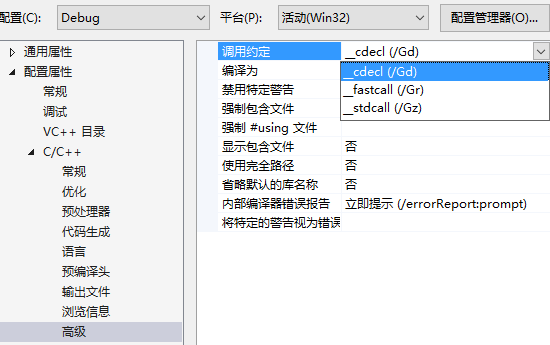

调用方式介绍
__cdecl 是 C Declaration 的缩写，表示C语言默认的函数调用方法：所有参数从右到左依次入栈。
这些参数在函数返回后由外部调用者清除，称为手动清栈。在外部使用 add esp,x 平衡堆栈，x是
参数所占的总字节数。利用此特性可以实现可变参数的函数功能。
__stdcall 是 Standard Call 的缩写，是C++的标准调用方式：所有参数从右到左依次入栈。如果用
此方法调用类成员函数，最后一个入栈的是 this 指针。这些参数由函数自己内部在返回时清除，称为
自动清栈。返回时使用 retn x 平衡堆栈，x表示参数所占的总字节数。
__fastcall 是通过寄存器来传递参数的，利用 ECX 和 EDX 传送前两个双字 DWORD 或更小的参数。
如果还有更多的参数，则从右到左依次入栈。这些由堆栈传送的参数，由函数自己内部在返回时清除，
即 自动清栈。返回时使用 retn x 平衡堆栈，x表示使用堆栈传送的参数的总字节数。
__thsicall 是仅仅应用于C++类成员函数。this 指针存放于 ECX 寄存器，该寄存器由编译器决定，
参数从右到左依次入栈，与 __stdcall 相同，返回时 自动清栈。__thiscall 不是关键词，因此不能
被程序员指定。在VC中编译器使用 ECX 传递，在Borland中编译器使用 EAX 传递。
nake call 是裸函数调用方式。不对堆栈 EBP ESP 做处理，函数体不附带任何编译器附加的操作。
用 __declspec(nake) 定义，调用的方式依据编译器中设定的 默认调用约定方式 决定。
导出的调用名称约定
__cdecl 是在函数名前加上一个下划线前缀，格式为_functionname。
__stdcall 是在函数名前加上一个下划线前缀，在后边加上一个@符号和其参数的总字节数。
__fastcall 是在函数名前加上一个@符号，在后边也加上一个@符号和其参数的总字节数。
__thiscall 是在函数名前加上类名和::符号。
nake call 是依据编译器设定的调用约定方式决定。
编译器设定默认调用约定
在VS中编译器默认为 /Gd，即 __cdecl 方式。__stdcall 对应为 /Gz，__fastcall 对应为 /Gr。

相关示例代码
我们编写一些示例的代码，来实际看一下内容
1
2
3
4
5
6
7
8
9
10
11
12
13
14
15
16
17
18
| #define EXPORT __declspec(dllexport)
extern "C"{
EXPORT void __cdecl FunA(int a, int b, int c){}
EXPORT void __stdcall FunB(int a, int b, int c){}
EXPORT void __fastcall FunC(int a, int b, int c){}
class CClassA { public: void EXPORT __thiscall FunD(int a, int b, int c){} };
EXPORT void __declspec(naked) FunE(int a, int b, int c){}
}
int __cdecl main(int argc, char* argv[])
{
CClassA obj;
FunA(1, 2, 3);
FunB(1, 2, 3);
FunC(1, 2, 3);
obj.FunD(1, 2, 3);
FunE(1, 2, 3);
return 0;
}
|
示例代码的的反编译后汇编指令
1
2
3
4
5
6
7
8
9
10
11
12
13
14
15
16
17
18
19
20
21
22
23
24
25
26
27
28
29
| CClassA obj;
FunA(1, 2, 3);
011514F8 6A 03 push 3
011514FA 6A 02 push 2
011514FC 6A 01 push 1
011514FE E8 42 FC FF FF call _FunA (01151145h)
01151503 83 C4 0C add esp,0Ch
FunB(1, 2, 3);
01151506 6A 03 push 3
01151508 6A 02 push 2
0115150A 6A 01 push 1
0115150C E8 02 FC FF FF call _FunB@12 (01151113h)
FunC(1, 2, 3);
01151511 6A 03 push 3
01151513 BA 02 00 00 00 mov edx,2
01151518 B9 01 00 00 00 mov ecx,1
0115151D E8 C9 FB FF FF call @FunC@12 (011510EBh)
obj.FunD(1, 2, 3);
01151522 6A 03 push 3
01151524 6A 02 push 2
01151526 6A 01 push 1
01151528 8D 4D F7 lea ecx,[obj]
0115152B E8 B1 FB FF FF call CClassA::FunD (011510E1h)
FunE(1, 2, 3);
01151530 6A 03 push 3
01151532 6A 02 push 2
01151534 6A 01 push 1
01151536 E8 14 FC FF FF call _FunE (0115114Fh)
0115153B 83 C4 0C add esp,0Ch
|